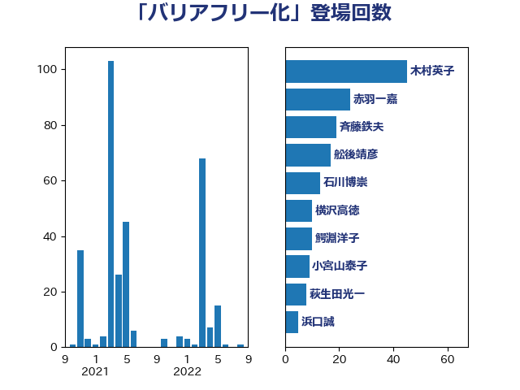

単語「バリアフリー化」

| 木村英子 | れいわ新選組 | 45 回 |
| 赤羽一嘉 | 公明党 | 24 回 |
| 斉藤鉄夫 | 公明党 | 19 回 |
| 舩後靖彦 | れいわ新選組 | 17 回 |
| 石川博崇 | 公明党 | 13 回 |
| 横沢高徳 | 立憲民主党 | 10 回 |
| 鰐淵洋子 | 公明党 | 10 回 |
| 小宮山泰子 | 立憲民主党 | 9 回 |
| 萩生田光一 | 自由民主党 | 8 回 |
| 浜口誠 | 国民民主党 | 5 回 |
| 吉田宣弘 | 公明党 | 4 回 |
| 池田佳隆 | 自由民主党 | 4 回 |
| 竹内真二 | 公明党 | 4 回 |
| 坂本哲志 | 自由民主党 | 3 回 |
| 塩川鉄也 | 日本共産党 | 3 回 |
| 室井邦彦 | 日本維新の会 | 3 回 |
| 伊藤孝江 | 公明党 | 2 回 |
| 山口那津男 | 公明党 | 2 回 |
| 山本博司 | 公明党 | 2 回 |
| 杉久武 | 公明党 | 2 回 |
| 枝野幸男 | 立憲民主党 | 2 回 |
| 笠井亮 | 日本共産党 | 2 回 |
| 金城泰邦 | 公明党 | 2 回 |
| 今井絵理子 | 自由民主党 | 1 回 |
| 塩田博昭 | 公明党 | 1 回 |
| 大西英男 | 自由民主党 | 1 回 |
| 山東昭子 | 自由民主党 | 1 回 |
| 岡本あき子 | 立憲民主党 | 1 回 |
| 岡本三成 | 公明党 | 1 回 |
| 川田龍平 | 立憲民主党 | 1 回 |
| 根本幸典 | 自由民主党 | 1 回 |
| 泉田裕彦 | 自由民主党 | 1 回 |
| 湯原俊二 | 立憲民主党 | 1 回 |
| 熊田裕通 | 自由民主党 | 1 回 |
| 牧原秀樹 | 自由民主党 | 1 回 |
| 菅義偉 | 自由民主党 | 1 回 |
| 金子恭之 | 自由民主党 | 1 回 |
| 阿部知子 | 立憲民主党 | 1 回 |
| 青木愛 | 立憲民主党 | 1 回 |
| 鳩山二郎 | 自由民主党 | 1 回 |